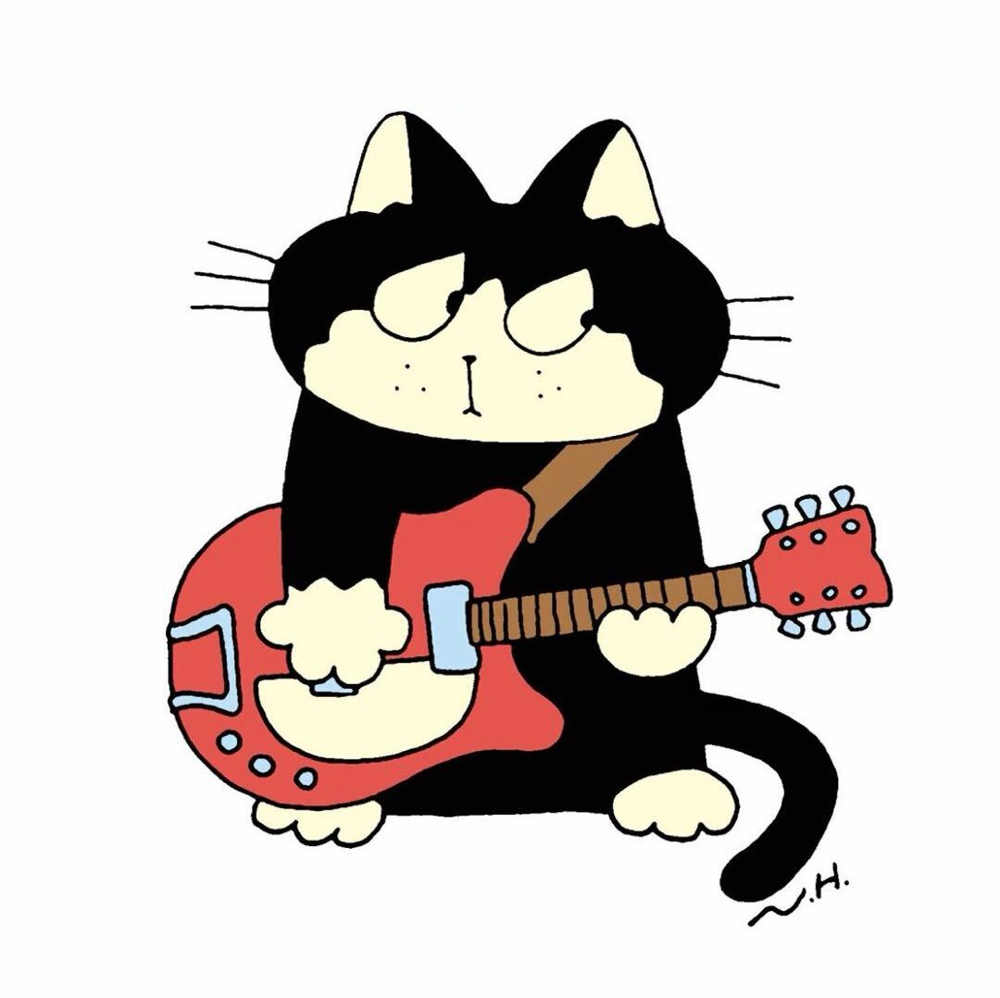

Shengjie Xu
BSc Information and Computing Science
- Portfolio construction and optimization
- User research analysis
- Academic/product benchmarking
- User interviews and poster design
Digital Object Museum of Generational Memory
Everyday objects carry the traces of how people lived, cared, learned, and remembered. Then & Now invites families to place objects from different generations side by side, turning small comparisons into a shared exhibition of memory.


BSc Information and Computing Science

BEng Digital Media Technology
BEng Digital Media Technology
BEng Digital Media Technology
The problem is not a lack of care, but a lack of shared language and shared topics between generations.
We focus on Topic B4: the silent connection gap between generations. Genuine care exists across families, but shared topics, interaction rhythms, and emotional expression are often misaligned. Grandparents and grandchildren differ in digital literacy, memory habits, and communication preferences, making everyday interaction awkward and less frequent. Family memories such as old photos and oral stories often stay static and rarely spark children's interest. Family Link / Then & Now turns these memories into playful, shared experiences that lower barriers for elders and motivate younger users through puzzles and story-unlocking.
Existing academic studies mainly focus on long-distance intergenerational connection or game-based approaches to bridge generations. Commercial products mostly support photo archiving or remote messaging, but rarely promote in-person, object-centered, and playful interaction around real family memories. There is a clear gap in solutions that balance elders' low-learning, simple operation with grandchildren's gamified engagement, while using tangible everyday objects to start natural conversations and create new shared memories at home.
Paper 1
Technologies for fostering intergenerational connectivity and relationships
Use everyday objects as low-pressure conversation starters, rather than relying only on game-based interaction.
Paper 3
Tangible Memories and Elders: Objects as Containers, Reminders and Instruments
Make everyday objects the main interaction trigger, with a simple visual interface for elders and engaging content for grandchildren.
Paper 2
Supporting intergenerational memento storytelling for older adults through a tangible display
Use familiar objects such as CDs, photos, or letters to naturally trigger in-person storytelling.
Paper 4
A Framework for Digital Technology to Foster Intergenerational Bonds at Home
Focus on home-based, face-to-face bonding through object-centered, low-pressure interaction.
Product 1
Turn shared memories into object-based, in-person activities instead of passive archives.
Product 3
Combine storytelling prompts with light, playful, object-based interaction.
Product 2
Adapt low-pressure communication into face-to-face object-based family activities.
Product 4
Keep the private, simple environment, but add interactive memory activities.
Who Family Link is Designed For — Family Link focuses on relationship maintenance during in-person family gatherings, not just individual messaging behaviour. It is designed for both users and the connection between them.
Familiar objects and low-input interaction help grandparents share stories without technical pressure.
Object comparison turns family memories into a playful activity, making storytelling natural and engaging.
Everyday objects serve as bridges, creating warm face-to-face interaction between generations.
Supports family bonding and can extend to more relationships and shared events over time.
"I want to know more about my grandma's life."
Curious, playful, and motivated by discovery, but needs interaction to feel light and engaging.
"I have so many stories to share."
Rich in memories but sensitive to complex interfaces and unfamiliar digital habits.
"It's hard to get them together."
Needs a gentle bridge that makes family communication easier without becoming another chore.


A familiar object appears.
Old and new objects are paired.
A prompt opens a family story.
The memory becomes an exhibit.
Start from familiar items, not abstract prompts.
Make conversation feel casual, not like an interview.
Use small interactions to create mutual curiosity.
 01
01 02
02 03
03 04
04 05
05 06
06 07
07 08
08Music: CD vs Streaming

Photos: Album vs iCloud

Travel: Paper Map vs GPS

Kitchen: Hand-written vs App
Question
Enter and set relationship.
Select an object pair.
Unlock a prompt and compare memories.
Save the story to the family wall.
Family memories stay fragmented across albums, phones, and oral stories.
Objects become playful triggers that help generations talk naturally.
A lightweight museum wall supports shared reflection and warm family bonds.